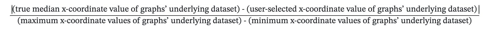
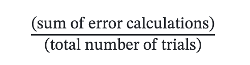

This project extends the component of our A3 experiment where we evaluate how accurately people perceive the median of the underlying dataset of a histogram. For this experiment, we have 5 different types of visualizations: histograms, density plots, scatter plots, beeswarm plots, and bar charts. The overarching goal of our experiment here was to determine how different graphs may impact users' ability to accurately find the median of the underlying dataset being visualized. It should be noted that for the sake of simplifying both our experiment and the task presented to users, if the elements of datasets we made both had x-coordinate values and y-coordinate values, the users only had to find the median of the x-coordinate values of the dataset.
This experiment tested the following visualization types:
The data used to create all of our graphs can be found here:
Check out the datasets used to create all of our graphs hereDue to the confidentiality reasons mentioned in our study's consent page, we could not publish our participants' experiment data.
The table below shows the average error calculations for each of our visualizations. For all of the different charts, the original error metric calculated was the absolute difference between the true median x-coordinate value of the graphs' underlying dataset and the user-selected x-coordinate value of the graphs' underlying dataset. However, during the error calculation, we ran into difficulties comparing the absolute errors of the raw values of the graphs. This is due to the fact that during the data generation process for the underlying datasets, different ranges / scales across different graph types were utilized to create the most appropriate datasets for each graph type. This made comparison of the raw absolute errors between graph types difficult because the absolute error for one graph type could be greater in terms of magnitude than the absolute error of a different graph type, but in terms of percentage error, the error may not be as significant as the raw magnitude would have one believe. To address this issue, we normalized all of the obtained error calculations throughout our experiment by dividing all of them by the difference between the maximum and minimum x-coordinate values of their corresponding graphs' underlying datasets. Therefore, the final formula used for calculating the error calculations throughout the entire experiment was:
Once all of the normalized error calculations were calculated, we then grouped them all by their corresponding vsiaulization. After doing so, we were able to calculate the average error for each visualization by summing up all their corresponding normalized errors and then dividing the total by the number of trials conducted for that particular visualization. The formula representing this calculation for each visualization is:
| Visualization | Error |
|---|---|
| Beeswarm Plot | 0.0199 |
| Density Plot | 0.0289 |
| Histogram | 0.0359 |
| Bar Chart | 0.0528 |
| Scatter Plot | 0.0732 |
An interesting result that came out of these calculations are that despite its unique format, the bar chart visualization did not have the largest average error calculation. A possible reason why this is the case is the fact that we gave hints to the users in order to help them figure out how to interpret this visualization correctly.
From this image, as the bar chart and beeswarm plot confidence intervals do not overlap, then we can say that there is a statistically significant difference between the absolute errors between the bar chart task and the beeswarm plot task. Additionally, as the bar chart task gave us a wider confidence interval, it also suggests that there was a higher variance of errors for that task than the beeswarm task. Moreover, the fact that the bar chart task gave us a wider confidence interval than the beeswarm plot task also suggests that the bar chart task was the harder of the two tasks for users. Users tended to more drastically underestimate or overestimate the x-coordinate of the median for the bar chart task in comparison to the beeswarm plot task. As the bar chart and density plot confidence intervals do not overlap, then we can say that there is a statistically significant difference between the absolute errors between the bar chart task and the density plot task. Additionally, as the density plot task gave us a wider confidence interval, it also suggests that there was a higher variance of errors for that task than the bar chart task. Moreover, the fact that the density plot task gave us a wider confidence interval than the bar chart task also suggests that the density plot task was the harder of the two tasks for users. Users tended to more drastically underestimate or overestimate the x-coordinate of the median for the density plot task in comparison to the bar chart task. As the scatter plot and beeswarm plot confidence intervals do not overlap, then we can say that there is a statistically significant difference between the absolute errors between the bar scatter plot and the beeswarm plot task. Additionally, as the scatter plot task gave us a wider confidence interval, it also suggests that there was a higher variance of errors for that task than the beeswarm plot task. Moreover, the fact that the scatter plot task gave us a wider confidence interval than the beeswarm plot task also suggests that the scatter plot task was the harder of the two tasks for users. Users tended to more drastically underestimate or overestimate the x-coordinate of the median for the scatter plot task in comparison to the beeswarm plot task. As the scatter plot and density plot confidence intervals do not overlap, then we can say that there is a statistically significant difference between the absolute errors between the scatter plot and the density plot task. Additionally, as the scatter plot task gave us a wider confidence interval, it also suggests that there was a higher variance of errors for that task than the density plot task. Moreover, the fact that the scatter plot task gave us a wider confidence interval than the density plot task also suggests that the scatter plot task was the harder of the two tasks for users. Users tended to more drastically underestimate or overestimate the x-coordinate of the median for the scatter plot task in comparison to the density plot task. As the scatter plot and histogram confidence intervals do not overlap, then we can say that there is a statistically significant difference between the absolute errors of the scatter plot and histogram tasks. Additionally, as the scatter plot task gave us a wider confidence interval, it also suggests that there was a higher variance of errors for that task than the histogram task. Moreover, the fact that the scatter plot task gave us a wider confidence interval than the histogram task also suggests that the scatter plot task was the harder of the two tasks for users. Users tended to more drastically underestimate or overestimate the x-coordinate of the median for the scatter plot task in comparison to the histogram task.